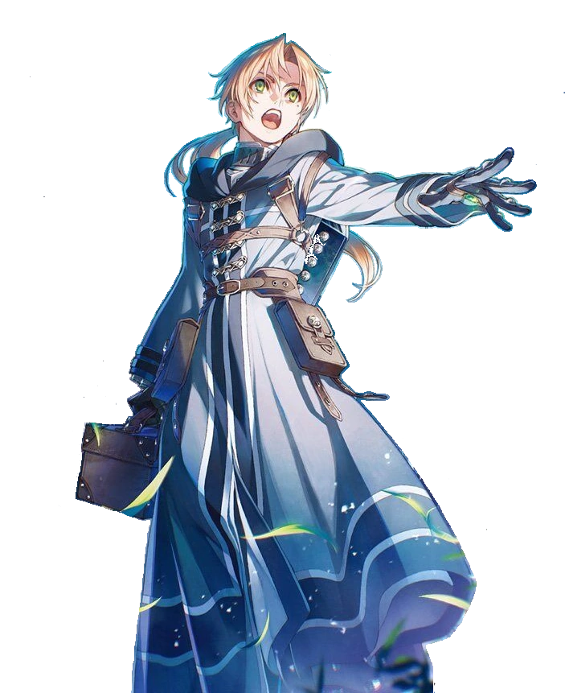
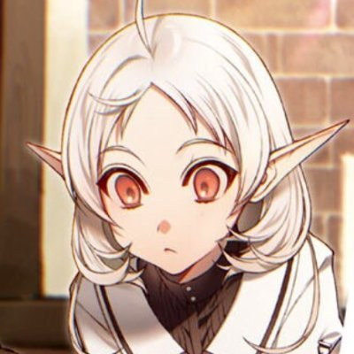

Agrupación de personajes:
Academia Mágica de Ranoa
Zanoba ShironeCliff Grimoire
Rinia Dedorudia
Pursena Adorudia
Ariel Anemoi Asura
Luke Notos Greyrat
Nanahoshi
Rudeus Greyrat
Rudeus Greyrat es el protagonista principal de Mushoku Tensei
. Era un NEET japonés de 34 años con sobrepeso que es reencarnado en otro mundo después de haber sido atropellado por un camión al salvar unos niños. Dándose cuenta de que desperdició su antigua vida, se decide a vivir su nueva vida al máximo, la serie gira en como impacta este nuevo mundo mientras lentamente se aleja de sus raíces introvertidas.
Rudeus es un alto, fornido y guapo hombre. Nació con cabello café, pero debido a su segundo encuentro con Orsted se volvió blanco temporalmente. Sus ojos son un poco disparejos debido al cambio con un ojo demoniaco. Justo como su padre, tiene un lunar debajo de su ojo izquierdo.
Debido a su antigua vida, es cuidadoso de no dejarse llevar y volverse arrogante. Como resultado, es extremadamente humilde porque no quiere regresar a ser como antes. Es una persona noble, ayudando a sus amigos y protegiendo a su familia cuando es necesario. Debido a sus cualidades en ,uchos campos, la gente tiene altas expectativaas de el. Rudeus es educado con los demás, haciéndolos sentir incómodos seguidamente.
Debido a que antes era japonés el no quiere matar a nadie. Sin embargo, es completamente agresivo y no duda en dar a conocer su sed de sangre para cualquier amenaza a su familia.
Rudeus nació con el factor laplace, esto significa que su desarrollo como feto fue influenciado por convertirse en un posible recipiente para el dios demonio Laplaca a su momento de reencarnar. Como resultado de esto, Rudy cuenta con una absurda cantidad de maná.
Rudy tiene 3 esposas, 2 hermanas, 1 hermana completa y 1 media hermana, 6 hijos, 4 hijas mujeres y 2 varones.
Sylphiette

Sylphiette es la amiga de la infancia de Rudy, es parte elfa, humana y bestia. Mientras ocurrió el gran incidente de maná fue teletransportada a otro lugar donde se convirtió en una de las amigas y guardaespaldas de la princesa Ariel bajo el nombre de Fitts el silencioso
, lleva este nombre debido a su capacidad de conjurar en silencio.
Antigüamente tenía el pelo verde debido al factor de laplace. Pero gracias a que en el momento en que fue transportada por el desastre de maná, terminó en una caída libre, y, que tuvo que matar una bestia peligrosa apenas caer tuvo una gran cantidad de estrés usado, en conjunto con una sobreextenuación del maná que provocó que su cabello se hiciese blanco. Después de contraer matrimonio con Rudeus se empezó a dejar crecer el pelo y a usar ropas femeninas, esto, debido a que se tenía que hacer pasar por hombre mientras usaba el nombre de Fitts.
Cuando Syphiette era una niña, era bulleada por otros niños por ser una mestiza y tener un cabello verde esmeralda. Estos bullys le arrojaban bolas de barro o piedras, y algunas veces la pateaban. Todo esto ocurrió hasta que Rudy se hizo amigo de ella, la empezó a defender y la empezó a llamar Sylphy
. En el tiempo de su amistad, Rudy aprovechó para enseñarle matemáticas, como leer y escribir, pero lo más importante fue la conjuración en silencio. Como dato, la magia de fuego de Sylphy es menos potente en comparación con la de viento por ejemplo, eso debido a que le tiene miedo inconscientemente ya que a los 3 exprerimentó una quemadura a manos del fuego.
En la estadía de Rudy en la casa Boreas, Zenith le enseña a Sylphy el como usar magia de curación, donde ambas se sorprenden al enterarse de que Sylplhy puede usar la misma sin conjurar. En el momento del cumpleaños 10 de Rudy, ella le talla un pendiente de madera que sirve para la buena suerte.
Sylphy tiene 2 hijos, un varón y una mujer. En las historias de Jobless Oblige
su hijo, Sieghart Saladin se convierte en el Dios del Norte, uno de los 7 poderes mundiales .
Eris Greyrat

Eris Boreas Greyrat, una noble y prima de Rudeus...